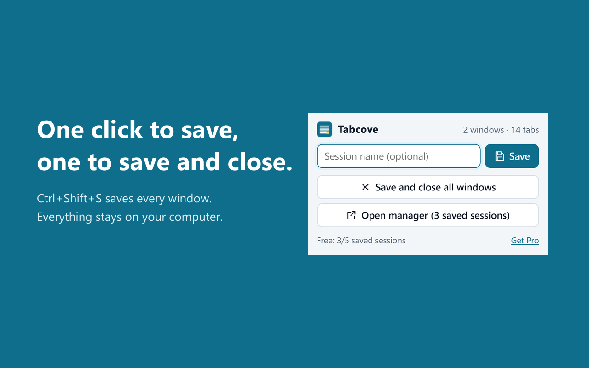
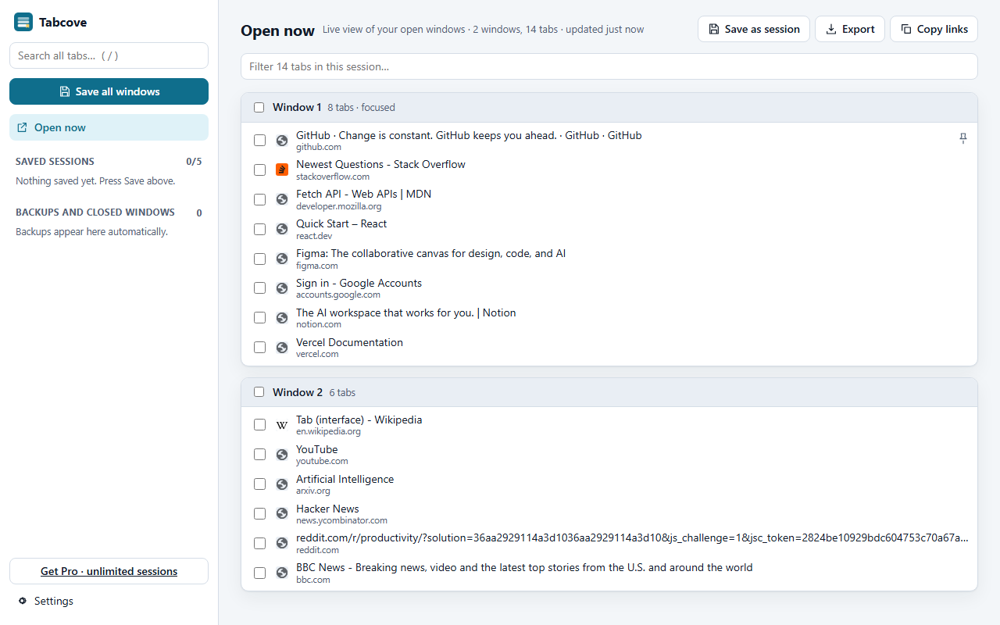

Tabcove backs up every Chrome window automatically, keeps the windows you close, and brings any session back in one click. Everything stays on your computer.
Works in Chrome, Edge and Brave. No account, no sync server, no analytics.

Every window is saved on a timer, only when something changed. A window you close is kept so you can bring it back.
Click the toolbar button or press Ctrl+Shift+S. "Save and close all" frees memory and keeps everything.
Open a whole session, one window, or just the tabs you tick. Tabs load only when you click them, so 200 tabs come back without eating RAM.
Pinned tabs, tab groups with their names and colours, and which window each tab was in.
Search titles and addresses across every saved session and backup.
Stored in your browser profile only. Export a file any time; import OneTab and Session Buddy exports in a minute.

You get a licence key by email. Paste it in Tabcove, Settings. 14-day refund if it does not work for you.
Chrome keeps only the last session and a short list of recently closed tabs. After a crash, an update or an accidental new window, that is gone. Tabcove keeps timed backups, closed windows and named sessions for as long as you want, and lets you search them.
No. There is no account and no server. The only network request Tabcove ever makes is the licence check with Gumroad if you buy Pro. Read the privacy policy.
Yes. Export from the old extension, then Settings, Import in Tabcove. Both formats are read directly (Pro).
Chrome deletes the extension storage. Export a file first from Settings if you want to keep it.
Email umairii2207@gmail.com or open an issue on GitHub.